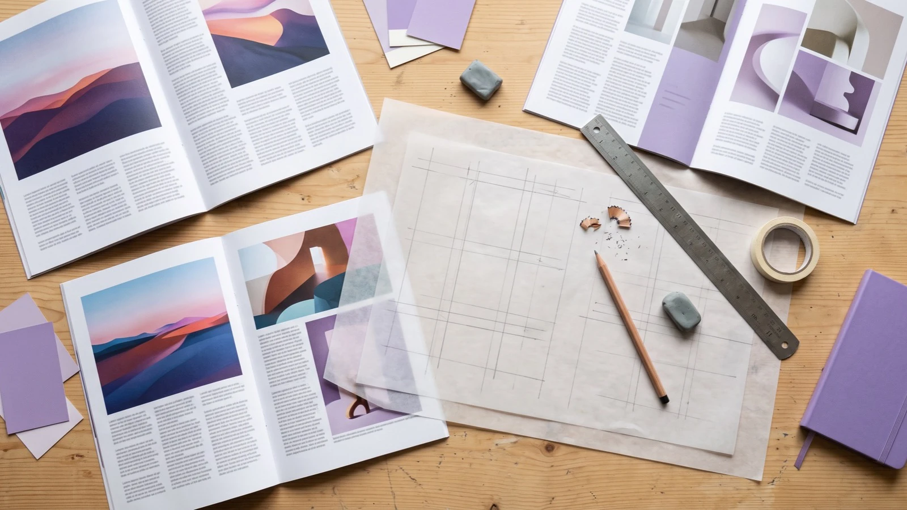
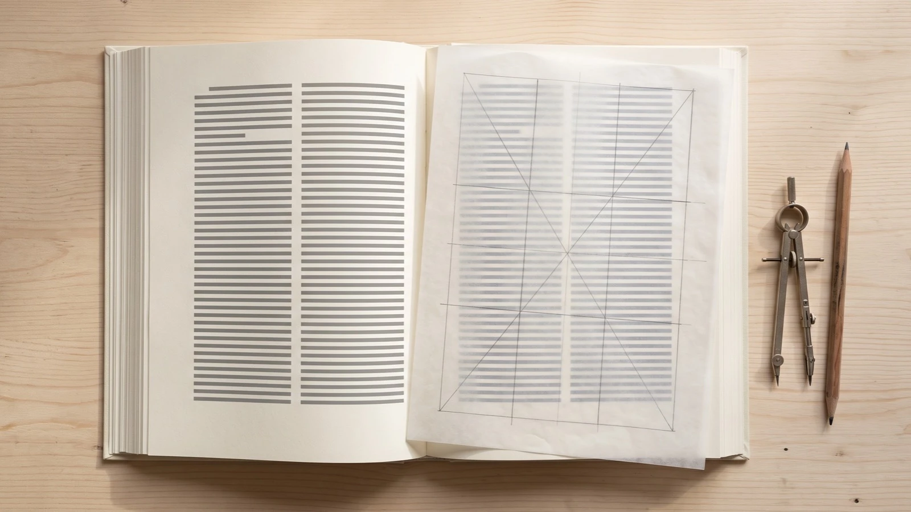
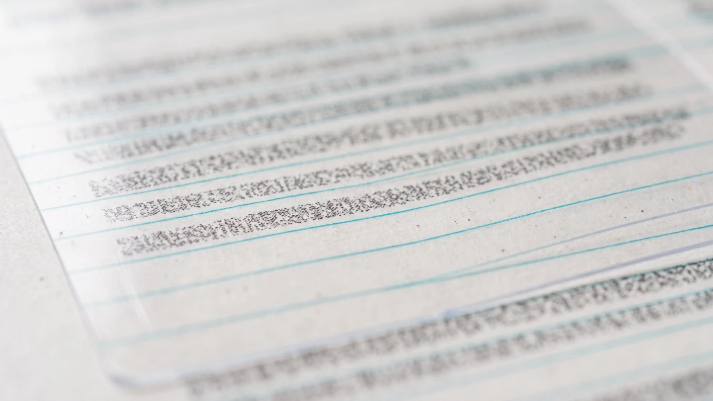
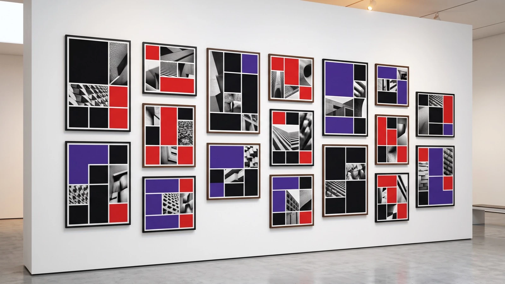
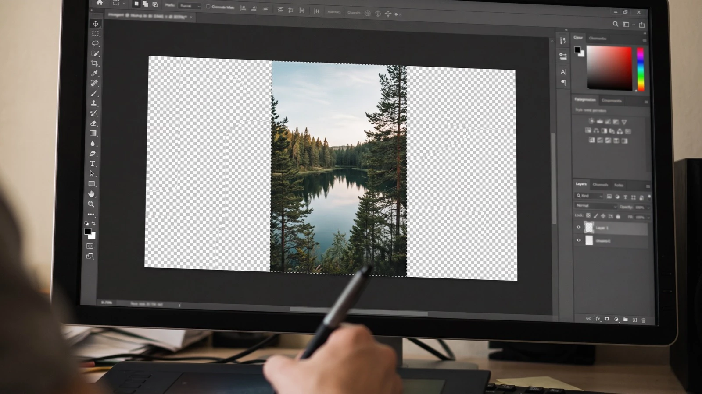
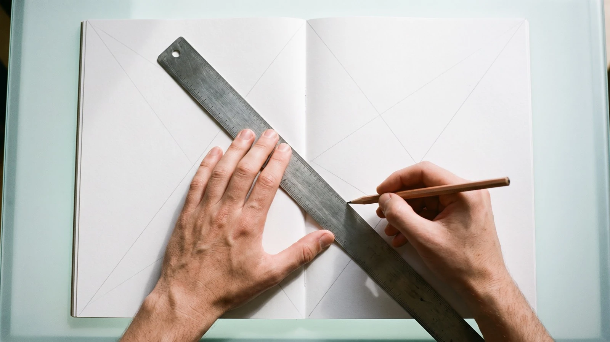
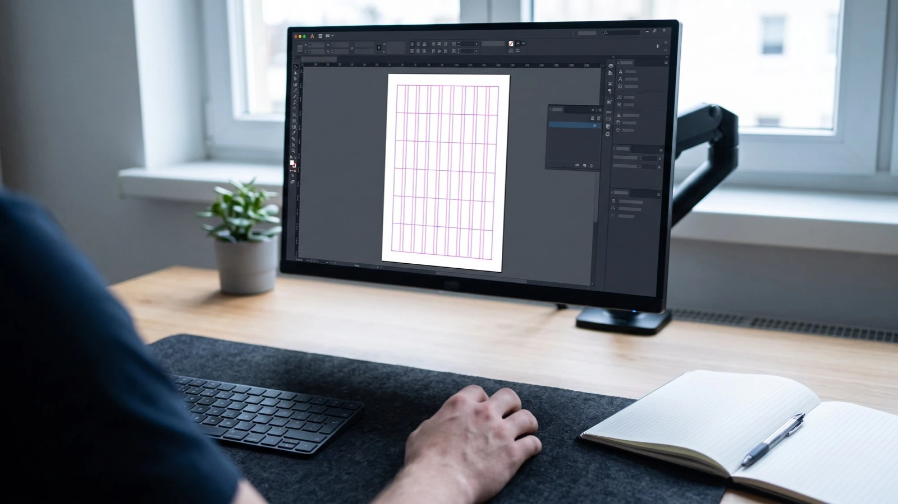
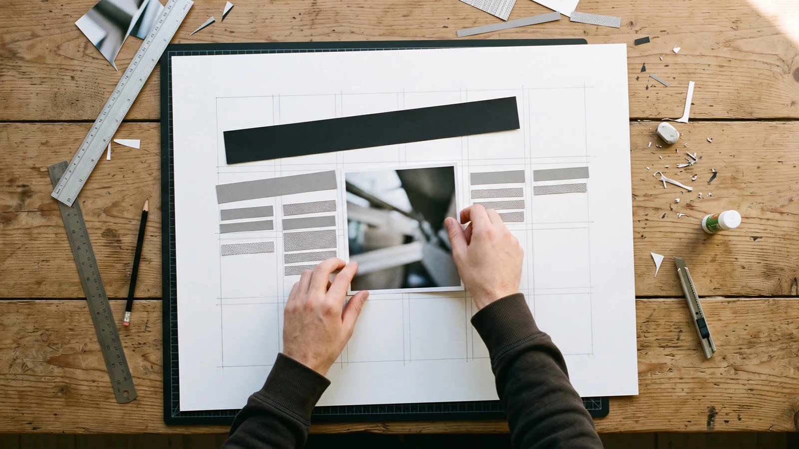
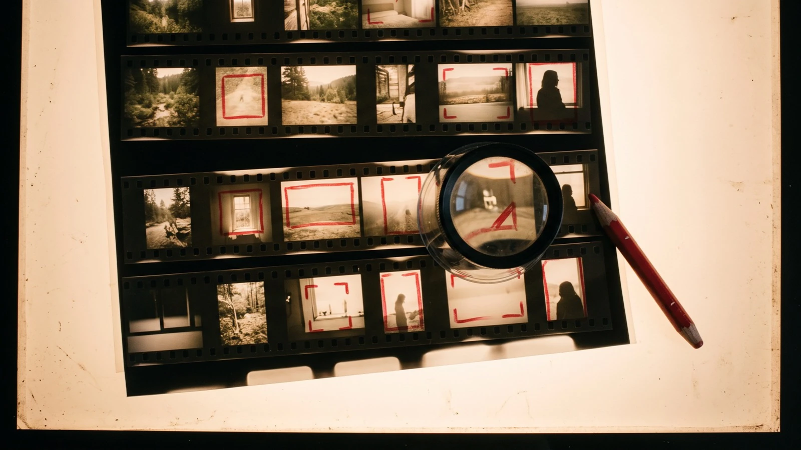
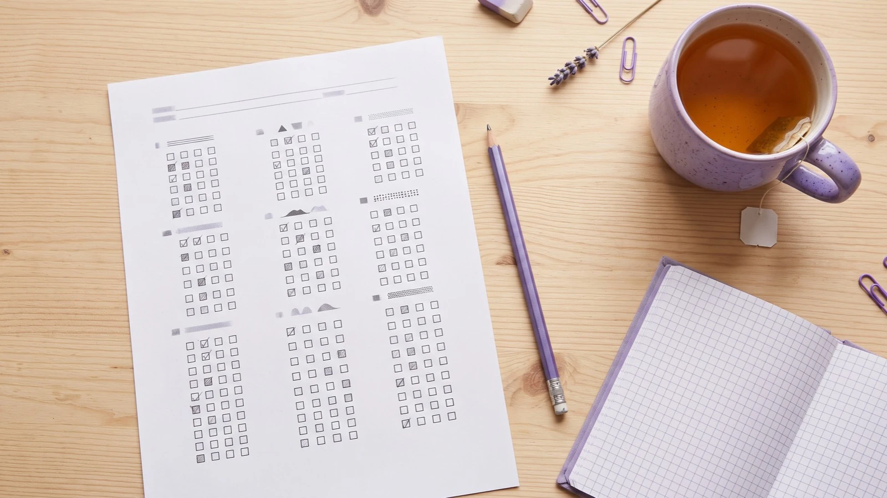

Lernmodul 02 · Grundlagen der Mediengestaltung
Layout und Raster
Ein gutes Layout fällt kaum auf: Man findet sofort, was wichtig ist, und liest ohne Mühe. Dahinter steckt fast immer ein Raster. Dieses Modul führt vom Satzspiegel im Buch über Spalten-, Grundlinien- und modulare Raster bis zum responsiven 12-Spalten-Raster im Web. Dazu kommt das Bild im Layout, auch wenn Sie es mit KI erzeugen oder bearbeiten. Mit sechs Übungen, in denen Sie konstruieren, rechnen, platzieren und zuschneiden.

Theorie & Grundlagen
Kapitel 01–10Übungen
Konstruieren · Rechnen · PlatzierenWissen
Test · Literatur · RegisterWarum Layout und Raster?
Layout heißt: Text, Bild und Fläche auf einem Format so anordnen, dass eine Botschaft schnell und richtig ankommt. Ein Raster ist das unsichtbare Gerüst dafür. Es legt Ränder, Spalten und Abstände fest, bevor das erste Element platziert wird. Das klingt nach Einschränkung, ist aber vor allem eine Entlastung: Viele Entscheidungen sind dann schon getroffen.
Dieselben Elemente, zwei Wirkungen
Beide Entwürfe enthalten exakt dieselben Elemente: Überschrift, Bild, zwei Textblöcke und eine Infozeile. Schalten Sie um und achten Sie darauf, wie schnell Sie die Reihenfolge erfassen.
Vier Aufgaben eines Rasters
Ordnen
Gleiche Kanten und Abstände verbinden, was zusammengehört, und trennen, was verschieden ist. Das Auge findet Linien, denen es folgen kann.
Gewichten
Größe und Position im Raster zeigen die Rangfolge: Was mehr Spalten bekommt, ist wichtiger. So entsteht Hierarchie ohne zusätzliche Effekte.
Wiederholen
Über viele Seiten, Screens oder Folien bleibt das Erscheinungsbild gleich. Leserinnen und Nutzer lernen, wo sie was finden.
Beschleunigen
Im Team arbeiten alle mit denselben Maßen. Design und Code sprechen eine Sprache, etwa mit dem 12-Spalten-Raster und dem 8-px-Raster.
Lernziele
Nach Bearbeitung des Moduls können Sie …
- Formate, Satzspiegel und Stege benennen und einen Satzspiegel konstruieren,
- Spaltenbreiten aus Satzspiegel, Spaltenzahl und Spaltenabstand berechnen,
- Grundlinienraster und Registerhaltigkeit erklären und anwenden,
- mit modularen Rastern unterschiedliche, aber verwandte Layouts entwerfen,
- Weißraum, Ausrichtung und Blickführung bewusst einsetzen,
- ein responsives 12-Spalten-Raster mit Breakpoints und 8-px-Abständen aufbauen,
- Bildausschnitt, Format und Anschnitt für ein Layout festlegen,
- Bilder mit KI passend zum Layout generieren und generativ bearbeiten, mit Blick auf Qualität, Recht und Kennzeichnung.
So arbeiten Sie mit dem Modul
Kapitel 02–05 behandeln die klassischen Raster, 06–07 Komposition und Web, 08–10 das Bild im Layout.
Sechs Übungen vom Satzspiegel bis zum KI-Bild. Jede endet mit „Als erledigt markieren“.
Der Wissenstest mit 15 Fragen fasst das Modul zusammen. Ihr Fortschritt bleibt in diesem Browser gespeichert.
Verwandte Module: Zeilenlänge, Spaltensatz und Abstände vertiefen die Lektionen 2 und 4 im Lernmodul 01 Typografie. Prompting und generative Bildbearbeitung im Detail finden Sie im Lernmodul 08 UX & KI.
Format und Satzspiegel
Jedes Layout beginnt mit zwei Entscheidungen: Welches Format hat die Fläche, und wie viel Rand bleibt frei? Die bedruckte oder genutzte Fläche innerhalb der Ränder heißt Satzspiegel. Seine Lage bestimmt, ob eine Seite ruhig, großzügig, sparsam oder gedrängt wirkt.

Formate: die DIN-A-Reihe
Die Papierformate nach DIN EN ISO 216 haben ein Seitenverhältnis von 1 : √2 (etwa 1 : 1,414). Halbiert man ein Blatt an der langen Seite, entsteht das nächstkleinere Format mit demselben Verhältnis. A0 hat eine Fläche von genau einem Quadratmeter.
| Format | Maße in mm | Typischer Einsatz |
|---|---|---|
| A2 | 420 × 594 | Plakat |
| A3 | 297 × 420 | kleines Plakat, Zeichnung |
| A4 | 210 × 297 | Brief, Bericht, Magazin |
| A5 | 148 × 210 | Flyer, Broschüre, Notizbuch |
| A6 | 105 × 148 | Postkarte |
Am Bildschirm gibt es kein festes Format. Dort spricht man von Viewports und Seitenverhältnissen wie 16 : 9 oder 9 : 16. Wie man damit umgeht, zeigt Kapitel 07.
Satzspiegel und Stege
Die vier Ränder einer Seite heißen Stege. In einer Doppelseite liegen sie spiegelbildlich: Der Bundsteg liegt zur Heftung hin, der Außensteg zum Blattrand.
Bundsteg
Innenrand an der Bindung. Im Buch meist der schmalste Steg, weil sich die beiden Bundstege einer Doppelseite optisch addieren.
Kopfsteg
Oberer Rand. Hier stehen oft der lebende Kolumnentitel oder die Paginierung.
Außensteg
Rand zur Blattkante. Er bietet Platz für Daumen und Marginalien.
Fußsteg
Unterer Rand, traditionell der breiteste. Er gibt dem Satzspiegel optischen Halt, damit er nicht nach unten „rutscht“.
Klassische Konstruktionen
Wählen Sie eine Konstruktion. Die Doppelseite zeigt ein A4-Format, die Maße werden exakt berechnet.
Neunerteilung
Breite und Höhe werden in neun Teile geteilt. Bund- und Kopfsteg erhalten je einen Teil, Außen- und Fußsteg je zwei. Das Ergebnis entspricht der Diagonalkonstruktion nach Villard de Honnecourt und J. A. van de Graaf, die Jan Tschichold bekannt machte.
Zwölferteilung
Wie die Neunerteilung, aber mit zwölf Teilen. Die Ränder werden schmaler, der Satzspiegel größer. Das ist wirtschaftlicher und passt zu Sachbüchern und Zeitschriften.
Modern gleichmäßig
Viele Broschüren und Berichte nutzen einfache, fast gleiche Ränder, zum Beispiel 20 mm, unten etwas mehr. Das wirkt sachlich und lässt Platz für Bilder im Anschnitt.
Üben: In Übung 1 konstruieren Sie Neuner- und Zwölferteilung selbst mit Reglern.
Das Spaltenraster
Innerhalb des Satzspiegels teilen Spalten die Fläche senkrecht auf. Das Spaltenraster ist das häufigste Raster überhaupt: in Zeitungen, Magazinen, Präsentationen und auf fast jeder Website. Drei Größen bestimmen es: die Breite des Satzspiegels, die Zahl der Spalten und der Abstand dazwischen.
Begriffe
Spalte
Senkrechter Streifen für Text oder Bild. Elemente können eine oder mehrere Spalten belegen.
Spaltenabstand
Freiraum zwischen zwei Spalten, auch Zwischenschlag oder englisch Gutter. Im Druck meist 4–6 mm, im Web 16–32 px.
Marginalspalte
Schmale Spalte am Rand für Bildunterschriften, Anmerkungen oder Zitate. Typisch für Fachbücher und Berichte.
Die Spaltenformel
Die Breite einer Spalte ergibt sich aus der Satzspiegelbreite minus allen Spaltenabständen, geteilt durch die Zahl der Spalten:
Spaltenbreite = (Satzspiegelbreite − (Spalten − 1) × Spaltenabstand) ÷ Spalten
Beispiel A4 mit 20 mm Rand links und rechts: Der Satzspiegel ist 170 mm breit. Bei drei Spalten und 5 mm Abstand ergibt sich (170 − 2 × 5) ÷ 3 = 53,3 mm pro Spalte.
Die Zeichenzahl ist eine Näherung: Bei einer Grotesk ist ein durchschnittliches Zeichen etwa eine halbe Schriftgröße breit. 1 pt (DTP-Punkt) entspricht 0,353 mm. Der klassische Didot-Punkt misst etwa 0,376 mm.
Wie viele Spalten?
| Spalten | Wirkung | Typischer Einsatz |
|---|---|---|
| 1 | ruhig, buchartig, lange Zeilen | Roman, Brief, Abschlussarbeit |
| 2 | sachlich, gut lesbar, symmetrisch | Fachzeitschrift, Bericht |
| 3–4 | flexibel, Bilder über 1–4 Spalten | Magazin, Broschüre, Folien |
| 5–6 | dicht, viele Kombinationen | Zeitung, Katalog, Plakatreihe |
| 12 | maximal teilbar (1, 2, 3, 4, 6, 12) | Website, App, Design-System |
Ein Trick der Profis: Man legt mehr Spalten an, als man für Text braucht. Ein sechsspaltiges Raster erlaubt Text über zwei oder drei Spalten und Bilder über eine bis sechs Spalten. So bleibt der Text gut lesbar und das Layout trotzdem abwechslungsreich.
Zeilenlänge: Gut lesbar sind etwa 45–75 Zeichen pro Zeile. Mehr dazu in Lektion 2 der Typografie-App. In Übung 2 berechnen Sie Spaltenbreiten selbst.
Das Grundlinienraster
Spalten teilen die Fläche senkrecht, das Grundlinienraster teilt sie waagerecht. Es besteht aus gleichmäßig verteilten Linien im Abstand des Zeilenabstands. Alle Textzeilen stehen auf diesen Linien. So laufen die Zeilen benachbarter Spalten auf derselben Höhe, und das Layout wirkt geordnet, auch wenn man den Grund dafür nicht sofort sieht.

Registerhaltigkeit
Ein Satz heißt registerhaltig, wenn alle Zeilen auf einem gemeinsamen Grundlinienraster stehen. Das hat zwei Vorteile:
- Nebeneinander: Die Zeilen benachbarter Spalten fluchten. Das Auge springt ruhig von Spalte zu Spalte.
- Hintereinander: Bei dünnem Papier liegen die Zeilen von Vorder- und Rückseite übereinander. Der Text der Rückseite scheint nicht zwischen den Zeilen durch.
Raster helfen, Entscheidungen früh zu treffen. Wer Ränder, Spalten und Zeilenabstand festlegt, muss später weniger nachdenken und kann sich auf den Inhalt konzentrieren.
Zwischenüberschrift
Steht die Überschrift mit freien Abständen im Text, verschieben sich alle folgenden Zeilen gegenüber der Nachbarspalte.
In dieser Spalte gibt es keine Überschrift. Ihre Zeilen laufen gleichmäßig weiter und zeigen, wo das Raster liegt. Vergleichen Sie die Zeilen links und rechts auf gleicher Höhe.
Mit Abständen im Raster sind Überschrift und Absätze immer ein Vielfaches der Grundlinie hoch. Dann fluchten die Zeilen wieder.
So legen Sie ein Grundlinienraster an
- Grundschrift festlegen. Zum Beispiel 9 pt mit 12 pt Zeilenabstand. Der Zeilenabstand ist das Rastermaß.
- Satzspiegelhöhe anpassen. Sie sollte ein ganzes Vielfaches des Rastermaßes sein, damit die letzte Zeile genau auf dem Fußsteg steht.
- Überschriften einpassen. Ihr Zeilenabstand und ihre Abstände nach oben und unten ergeben zusammen ein Vielfaches des Rastermaßes, z. B. 24 pt.
- Bilder einpassen. Bildoberkanten stehen auf der Versalhöhe der ersten Zeile, Unterkanten auf einer Grundlinie.
- Halbe Schritte erlauben. Für Bildunterschriften und Fußnoten darf ein halbes Rastermaß gelten. Sie treffen dann jede zweite Linie.
Im Web: das 4- und 8-px-Raster
Browser kennen kein echtes Grundlinienraster. Viele Design-Systeme arbeiten deshalb mit einem vertikalen Rhythmus: Zeilenhöhen und Abstände sind Vielfache von 4 oder 8 px, zum Beispiel 16 px Schrift mit 24 px Zeilenhöhe und 24 oder 32 px Abstand zwischen Absätzen. CSS bietet mit text-box-trim und lh-Einheiten neue Werkzeuge, um Text genauer auf ein Raster zu setzen.
Das modulare Raster
Kombiniert man Spalten mit waagerechten Teilungen, entstehen Rasterfelder, auch Module genannt. Jedes Element belegt ein oder mehrere Felder. Das modulare Raster wurde in der Schweizer Typografie der 1950er- und 1960er-Jahre zur Methode, vor allem durch Josef Müller-Brockmann. Es ist streng und erlaubt doch erstaunlich viele Varianten.

Aufbau
Rasterfeld
Kleinste Einheit, begrenzt von Spalten und Zeilen, getrennt durch Abstände. Bei Müller-Brockmann ist die Feldhöhe ein Vielfaches der Zeilenhöhe, das Feld also auch mit dem Grundlinienraster verbunden.
Feldkombination
Bilder und Textblöcke belegen 1, 2, 4, 6 … Felder. Weil alle Kanten auf den Feldgrenzen liegen, passen unterschiedliche Größen zusammen.
Anzahl der Felder
Wenige Felder (z. B. 4 oder 6) erzeugen ruhige, plakative Layouts. Viele Felder (z. B. 20 oder 32) erlauben feine Abstufungen, erfordern aber mehr Disziplin.
Weißraum als Element
Leere Felder sind keine Lücken, sondern Teil der Komposition. Sie geben den gefüllten Feldern Spannung.
Ausprobieren: viele Layouts, ein Raster
Wählen Sie ein Raster und erzeugen Sie neue Kompositionen. Jede besteht aus Überschrift, Bild, Text und Akzent, und jede hält sich exakt an die Felder.
„Die Verwendung des Rasters als Ordnungssystem ist Ausdruck einer bestimmten geistigen Haltung.“Josef Müller-Brockmann, Rastersysteme für die visuelle Gestaltung (1981)
Üben: In Übung 3 setzen Sie Elemente selbst auf ein modulares Plakatraster.
Komposition und Hierarchie
Das Raster sagt, wo Elemente stehen dürfen. Die Komposition entscheidet, wo sie tatsächlich stehen. Gute Kompositionen haben einen klaren Einstieg, eine erkennbare Rangfolge und genug Weißraum. Viele dieser Regeln sind Gestaltgesetze, die Sie aus der Wahrnehmungspsychologie kennen.
Fünf Werkzeuge der Komposition
Weißraum
Freie Fläche lenkt den Blick auf das, was da ist. Viel Weißraum wirkt hochwertig und ruhig, wenig Weißraum dicht und laut. Weißraum muss nicht weiß sein, gemeint ist jede ungefüllte Fläche.
Nähe
Was nah beieinander steht, gehört zusammen (Gesetz der Nähe). Der Abstand zwischen Bild und Bildunterschrift muss deutlich kleiner sein als der zum nächsten Element.
Ausrichtung
Gemeinsame Kanten verbinden Elemente über Distanz. Je weniger verschiedene Kanten ein Layout hat, desto ruhiger wirkt es.
Kontrast
Größe, Gewicht, Farbe und Fläche zeigen die Rangfolge. Ein klarer Kontrast zwischen erstem und zweitem Rang ist wirksamer als viele kleine Abstufungen.
Wiederholung
Gleiche Abstände, Bildformate und Auszeichnungen machen ein Layout lernbar. Abweichungen fallen dann auf und können gezielt betonen.
Rasterbruch
Wer die Regeln beherrscht, darf sie brechen: Ein Bild, das bewusst aus dem Raster ragt, wirkt nur, weil alles andere im Raster steht.
Blickführung
In Leserichtung von links oben nach rechts unten tastet das Auge eine Fläche in typischen Mustern ab. Sie helfen, wichtige Inhalte richtig zu platzieren.
Goldener Schnitt und Drittelregel: Der Goldene Schnitt teilt eine Strecke im Verhältnis 1 : 1,618. Die Drittelregel ist seine einfache Näherung. Beides sind Ausgangspunkte für spannungsvolle Teilungen, keine Gesetze. Ein mittig gesetztes Motiv kann genauso stark sein, wenn Ruhe und Symmetrie gewollt sind.
Das responsive 12-Spalten-Raster
Eine Website hat kein festes Format. Sie wird auf Smartphones mit 360 px Breite genauso gelesen wie auf Monitoren mit 2.560 px. Ein responsives Raster ändert deshalb an festgelegten Breiten, den Breakpoints, die Zahl der Spalten und die Abstände. Die Inhalte fließen neu, die Ordnung bleibt.
Warum zwölf Spalten?
Zwölf ist durch 1, 2, 3, 4, 6 und 12 teilbar. Ein Element kann also die ganze Breite, die Hälfte, ein Drittel, ein Viertel oder ein Sechstel belegen, ohne dass Reste bleiben. Darum nutzen Bootstrap, viele Design-Systeme und Vorlagen in Figma ein 12-Spalten-Raster. Material Design reduziert die Spaltenzahl auf kleinen Bildschirmen.
Bausteine eines Web-Rasters
| Breakpoint | Breite ab | Spalten | Gutter | Rand |
|---|---|---|---|---|
| Mobil | 0 px | 4 | 16 px | 16 px |
| Tablet | 600 px | 8 | 24 px | 32 px |
| Desktop | 1024 px | 12 | 24 px | auto, Inhalt max. 1200 px |
Beispielwerte, angelehnt an Material Design 3 und gängige Design-Systeme. Jedes Projekt legt eigene Werte fest.
Das 8-px-Raster
Für Abstände und Größen nutzen viele Teams ein Basismaß von 8 px: 8, 16, 24, 32, 48, 64 … Für feine Abstände innerhalb von Komponenten ist 4 px erlaubt. Der Vorteil: Weniger Werte, weniger Diskussion, und die Maße skalieren sauber auf Displays mit 1,5- und 2-facher Pixeldichte.
Im Code: CSS Grid
.layout {
display: grid;
grid-template-columns: repeat(4, 1fr); /* mobil */
gap: 16px;
padding-inline: 16px;
max-width: 1200px;
margin-inline: auto;
}
@media (min-width: 600px) {
.layout { grid-template-columns: repeat(8, 1fr); gap: 24px; padding-inline: 32px; }
}
@media (min-width: 1024px) {
.layout { grid-template-columns: repeat(12, 1fr); }
}
.hero { grid-column: 1 / -1; } /* volle Breite */
.teaser { grid-column: span 4; } /* 1 von 3 auf Desktop */Bento-Grid
Ein aktueller Trend sind Bento-Grids: Kacheln unterschiedlicher Größe, die wie Fächer einer japanischen Bento-Box ein Rechteck füllen. Auch sie folgen einem modularen Raster. Auf dem Smartphone werden sie meist zu einer einspaltigen Liste, deshalb muss die Reihenfolge der Kacheln auch linear Sinn ergeben.
Üben: In Übung 4 legen Sie fest, wie viele Spalten Hero und Karten an drei Breakpoints belegen.
Das Bild im Layout
Bilder werden vor dem Text gesehen. Sie setzen den Ton, wecken Interesse und führen den Blick. Im Layout zählt dabei nicht nur, was ein Bild zeigt, sondern auch wie: welcher Ausschnitt, welches Format, wie groß, in welche Richtung und ob es an den Rand stößt.
Ausschnitt und Format
Ein Foto ist selten genau so, wie das Layout es braucht. Der Bildausschnitt entscheidet über Aussage und Wirkung: Eng geschnitten wirkt ein Motiv nah und emotional, weit geschnitten zeigt es den Zusammenhang. Das Format sollte zur Rasterfläche passen, nicht umgekehrt.
| Seitenverhältnis | Wirkung | Typischer Einsatz |
|---|---|---|
| 16 : 9 | weit, filmisch, ruhig | Website-Hero, Video, Präsentation |
| 3 : 2 / 4 : 3 | klassisch fotografisch | Magazin, Bericht, Galerie |
| 1 : 1 | neutral, statisch, konzentriert | Profilbild, Social-Media-Post, Raster aus Kacheln |
| 4 : 5 | hoch, nah, präsent | Instagram-Feed, Porträt |
| 9 : 16 | sehr hoch, bildschirmfüllend mobil | Story, Reel, mobiles Vollbild |
Regeln für Bilder im Layout
Blickrichtung
Menschen, Fahrzeuge und Tiere sollen in das Layout hinein blicken oder fahren, nicht hinaus. In Bewegungsrichtung braucht ein Motiv mehr Raum als dahinter.
Anschnitt
Randabfallende Bilder reichen bis zur Blattkante und wirken großzügig. Im Druck legt man sie 3 mm über das Endformat hinaus an (Beschnittzugabe), damit nach dem Schneiden kein weißer Blitzer bleibt.
Größe zeigt Rang
Ein großes Bild und mehrere kleine wirken stärker als viele gleich große. Das Leitbild einer Seite sollte klar zu erkennen sein.
Kanten im Raster
Bildkanten liegen auf Spalten- und Feldgrenzen. Dann stehen Bilder und Text in Beziehung, auch wenn sie unterschiedlich groß sind.
Text auf Bild
Nur auf ruhigen Bildflächen oder mit Verlauf, Abdunklung oder Fläche dahinter. Der Kontrast muss die WCAG-Werte erreichen (Lernmodul 03, Kapitel 10).
Auflösung
Druck: etwa 300 ppi in Endgröße. Web: Bilder für hochauflösende Displays in doppelter Pixelbreite liefern, mit srcset und modernen Formaten wie WebP oder AVIF.
Bild und Text in Beziehung setzen
- Bildunterschrift direkt am Bild, in kleinerer Schrift, mit kleinem Abstand. Sie wird oft vor dem Fließtext gelesen.
- Alternativtext für alle inhaltlich relevanten Bilder im Web: Er beschreibt, was das Bild in diesem Zusammenhang aussagt.
- Bildsprache einheitlich halten: gleiche Lichtstimmung, ähnliche Farbwelt, gleiche Perspektive in einer Serie.
Üben: In Übung 5 schneiden Sie ein Foto für drei Formate zu und achten auf Drittelregel und Blickrichtung.
Bilder für das Layout generieren
Bildgeneratoren liefern in Sekunden Motive, die es nicht gibt oder die zu teuer wären. Für ein Layout reicht ein schönes Bild aber nicht: Es muss in eine bestimmte Rasterfläche passen, Platz für Text lassen und zu den anderen Bildern passen. Wer das Layout zuerst plant, bekommt bessere Bilder.
Erst das Layout, dann das Bild
- Rasterfläche festlegen. Welche Spalten und Felder belegt das Bild? Daraus folgt das Seitenverhältnis, zum Beispiel 16 : 9 für einen Hero über 12 Spalten.
- Textzone markieren. Wo stehen Überschrift und Button? Diese Fläche muss im Bild ruhig und kontrastarm bleiben.
- Motiv positionieren. Das Hauptmotiv auf die Gegenseite der Textzone legen, möglichst auf einen Drittelpunkt, Blickrichtung zum Text.
- Bildsprache definieren. Licht, Farbwelt, Perspektive und Stil so beschreiben, dass eine ganze Serie zusammenpasst.
- Generieren, auswählen, prüfen. Mehrere Varianten erzeugen, im echten Layout testen, auf Fehler prüfen (Hände, Schrift, Perspektive, Details).
Layout-Anforderungen in Prompt-Sprache
| Layout braucht … | im Prompt | Hinweis |
|---|---|---|
| Format der Rasterfläche | Seitenverhältnis als Einstellung, z. B. 16 : 9 | Nicht nur im Text erwähnen: Die meisten Werkzeuge haben ein eigenes Feld dafür. |
| Platz für Text | „viel ruhiger, leerer Himmel in der linken Bildhälfte“, „negative space on the left“ | Beschreiben, was dort zu sehen sein soll, nicht nur, dass es leer sein soll. |
| Motivposition | „Person im rechten Bilddrittel, blickt nach links“ | Blick- und Bewegungsrichtung zur Textzone hin. |
| Einheitliche Serie | gleiche Formulierungen zu Licht, Farbe, Perspektive; Referenzbild oder Stilreferenz | Prompt-Baustein für die Bildsprache einmal festlegen und wiederverwenden. |
| Keine Schrift im Bild | „ohne Text, ohne Buchstaben, ohne Logos“ | Schrift gehört ins Layout: lesbar, übersetzbar, barrierefrei, änderbar. |
| Druck oder Retina | höchste Auflösung wählen, danach hochskalieren | Für Druck in Endgröße 300 ppi prüfen. |
Beispiel: Hero für eine Hochschulseite
Layout: Hero über 12 Spalten, 16 : 9. Überschrift und Button stehen links über den Spalten 1–5.
Breites Foto im Format 16:9: Eine Studentin mit Laptop sitzt auf einer Treppe vor einem modernen Hochschulgebäude, im rechten Bilddrittel, Blick leicht nach links. Die linke Bildhälfte zeigt ruhige, helle Betonfläche und unscharfen Hintergrund. Weiches Morgenlicht, warme, natürliche Farben, Augenhöhe, 35 mm. Ohne Text, ohne Logos.
Der Prompt folgt dem Aufbau aus Motiv, Aktion, Rahmen und Einstellungen, wie ihn das MARE-Prinzip im Lernmodul 08 beschreibt, und ergänzt die Anforderungen des Layouts.
Prüfen, bevor es ins Layout geht
- Passt das Bild in die Rasterfläche, ohne dass Wichtiges angeschnitten wird?
- Erreicht der Text auf der Textzone ausreichenden Kontrast?
- Gibt es Bildfehler: Hände, Gesichter, Perspektive, scheinbare Schrift, doppelte Objekte?
- Passt das Bild zu den anderen Bildern der Seite oder Serie?
- Ist es als KI-generiert gekennzeichnet, wo das nötig ist (Kapitel 10)?
Bilder mit KI bearbeiten
Oft gibt es schon ein passendes Foto, es hat nur das falsche Format, einen störenden Gegenstand oder zu wenig Auflösung. Generative Bildbearbeitung löst solche Layoutprobleme schnell. Sie erfindet dabei aber immer neue Pixel. Darum gilt: Ergebnis prüfen, Grenzen kennen, transparent bleiben.

Die wichtigsten Techniken
| Technik | Was passiert | Layoutproblem, das sie löst |
|---|---|---|
| Erweitern (Outpainting) | Das Bild wird über seine Ränder hinaus fortgesetzt. | Hochformat soll in ein Querformat, Platz für Text fehlt, Anschnitt braucht Beschnittzugabe. |
| Retusche (Inpainting) | Ein markierter Bereich wird neu erzeugt oder entfernt. | Störende Objekte, Kabel, Schilder oder Passanten in der Textzone. |
| Freistellen | Das Motiv wird vom Hintergrund getrennt. | Motiv soll über Rasterkanten ragen oder auf einer Farbfläche stehen. |
| Hochskalieren (Upscaling) | Die Auflösung wird erhöht, Details werden ergänzt. | Bild ist für Druck oder großes Format zu klein. |
| Licht und Farbe angleichen (Relighting) | Lichtrichtung und Farbstimmung werden verändert. | Bilder einer Serie passen nicht zusammen. |
Vorher und nachher: aus 4 : 5 wird 16 : 9
Das Porträt unten war für einen Social-Media-Post gedacht. Für einen Website-Hero wurde es mit Magnific auf 16 : 9 erweitert. Ziehen Sie den Regler und prüfen Sie, was die KI ergänzt hat.
Was gut funktioniert
Licht, Schattenrichtung und Perspektive setzen sich glaubwürdig fort. Die Person bleibt unverändert, weil die Originalpixel erhalten bleiben.
Was Sie prüfen müssen
Die ergänzte rechte Seite ist unruhig: Fassaden, Tische, Pflanzkübel. Text darauf ist nur mit Abdunklung lesbar (Raster einblenden). Besser wäre ein zweiter Durchgang mit Prompt, zum Beispiel „ruhige, unscharfe Grünfläche“.
Recht und Kennzeichnung
- Bildrechte am Ausgangsbild: Bearbeiten Sie nur Bilder, an denen Sie die nötigen Rechte haben. Eine Bearbeitung macht ein fremdes Bild nicht zu Ihrem.
- Personen: Gesichter, Körper und Umgebung realer Menschen nicht verfälschen. Für Personenbilder gilt das Recht am eigenen Bild.
- Kennzeichnung: Die KI-Verordnung der EU (AI Act, Art. 50) verlangt, dass täuschend echte KI-Inhalte erkennbar sind. Kennzeichnen Sie generierte und stark bearbeitete Bilder in der Bildunterschrift oder im Bildnachweis, so wie in diesem Modul.
- Herkunftsdaten: Viele Werkzeuge schreiben Content Credentials (C2PA) in die Datei. Entfernen Sie sie nicht.
Vertiefung: Inpainting, Outpainting und Relighting mit eigenen Beispielen, dazu Urheberrecht und Ethik, behandelt das Lernmodul 08 UX & KI. In Übung 6 wenden Sie beides auf ein Layout an.
Satzspiegel konstruieren
Stellen Sie die vier Stege einer rechten A4-Seite (210 × 297 mm) so ein, dass zwei klassische Satzspiegel entstehen. Die Diagonalen helfen beim Prüfen: Bei der Neunerteilung liegen zwei Ecken des Satzspiegels genau auf ihnen.

Wählen Sie das Ziel, berechnen Sie die Stege und stellen Sie sie mit den Reglern ein. Erst wenn alle vier Stege stimmen, gilt die Konstruktion als gelöst. Lösen Sie beide.
Wie viel Prozent der Seitenfläche nimmt der Satzspiegel jeweils ein? Für welche Publikation würden Sie welche Teilung wählen?
Raster berechnen
Gestaltungsprogramme rechnen Spaltenbreiten automatisch aus. Wer die Formel kennt, versteht aber, warum ein Raster passt oder nicht, und kann es in CSS übertragen. Drei Aufträge, drei Rechnungen.

Berechnen Sie für jeden Auftrag die gesuchte Größe und tragen Sie sie ein (auf eine Nachkommastelle, Komma oder Punkt). Die Vorschau zeigt das Raster, sobald Ihr Wert stimmt. Alle drei richtig: Übung bestanden.
Formel einblenden
Spaltenbreite = (Satzspiegelbreite − (Spalten − 1) × Abstand) ÷ Spalten. Satzspiegelbreite = Formatbreite − Bundsteg − Außensteg.
Raster-Generator
Übertragen Sie Ihr Raster ins Web. Der Generator rechnet ein Druckraster in ein CSS-Grid um.
Plakat aufs Raster setzen
Ein Plakat für den Tag der offenen Tür der Fakultät. Das Raster hat 6 Spalten und 8 Zeilen. Setzen Sie vier Elemente so, dass alle Regeln erfüllt sind. Es gibt viele richtige Lösungen.

Wählen Sie ein Element und stellen Sie Startspalte, Breite, Startzeile und Höhe ein. Die Regeln rechts werden sofort geprüft. Mit „Zufällig mischen“ beginnen Sie neu.
Regeln
Vergleichen Sie Ihre Lösung mit der Beispiellösung. Welche wirkt dynamischer, welche ruhiger, und warum?
Breakpoints planen
Die Startseite einer Mensa-App hat einen Hero und vier Karten. Legen Sie für Mobil, Tablet und Desktop fest, wie viele Spalten jedes Element belegt.
Erfüllen Sie an jedem Breakpoint diese Regeln: Der Hero belegt die volle Breite. Jede Karte ist zwischen 260 und 480 px breit. Die Karten sind gleich breit und füllen ihre Zeilen ohne Lücke.
Bildausschnitt wählen
Ein Querformat soll in drei Hoch- und Quadratformate für Social Media. Schneiden Sie es so zu, dass der Radfahrer gut platziert ist und in Fahrtrichtung Raum hat.

Wählen Sie ein Format und verschieben und vergrößern Sie den Ausschnitt. Der Radfahrer soll (1) vollständig im Bild sein, (2) nahe einem Drittelpunkt stehen und (3) mehr Raum vor sich als hinter sich haben. Er fährt nach links. Speichern Sie jeden gelungenen Ausschnitt.
Ein KI-Bild fürs Layout
Für die Website des Studiengangs braucht es ein Hero-Bild über 12 Spalten. Überschrift und Button stehen links über den Spalten 1–5. In Teil A bauen Sie den Prompt, in Teil B wählen Sie die passende Bearbeitung für typische Layoutprobleme.
Wählen Sie in jeder Zeile den Baustein, der am besten zum Layout passt. Der Prompt entsteht unten. Prüfen Sie, wenn alle Zeilen gewählt sind.
Welche Technik löst das jeweilige Problem am besten? Ab 4 von 5 richtigen Zuordnungen ist Teil B bestanden.
Generieren Sie den Prompt aus Teil A mit einem Werkzeug Ihrer Wahl. Legen Sie das Bild in ein 12-Spalten-Raster und prüfen Sie Textzone, Kontrast und Bildfehler. Wie kennzeichnen Sie das Bild?
Wissenstest
Fünfzehn Fragen quer durch das Modul. Nach jeder Frage erhalten Sie eine kurze Erklärung.

Literatur und Quellen
Grundlagenwerke und Standards zu Layout und Raster, chronologisch geordnet. Zur Vertiefung und für Hausarbeiten.
Bildnachweis
Alle Fotos und das Video in diesem Modul sind mit Magnific (ehemals Freepik) KI-generiert, das Vorher-nachher-Beispiel in Kapitel 10 mit der Funktion „Erweitern“. Alle Raster, Satzspiegel und Diagramme werden im Browser aus exakten Maßen berechnet.
Stichwortverzeichnis
Alle Fachbegriffe des Moduls, kurz erklärt und mit Verweis auf das passende Kapitel.